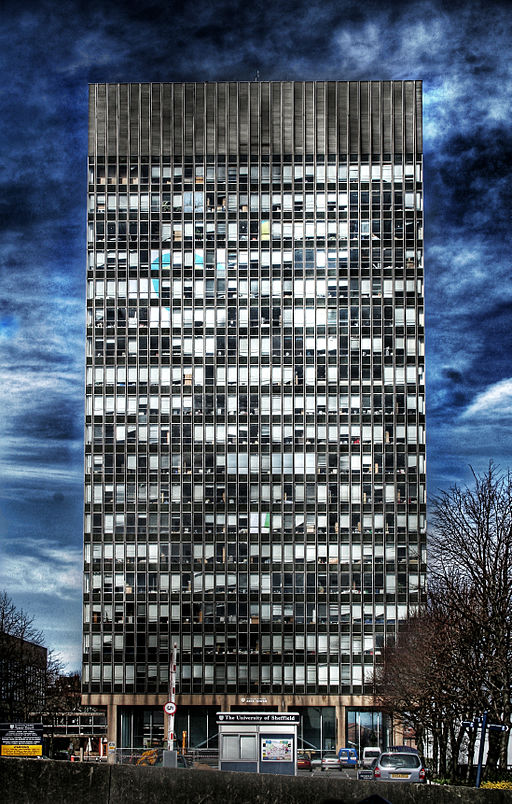

Brutalism in Web Design
by David JonesBrutalism in architecture, derived from the French brut for raw, has the idea that structure should be exposed. So it is with web design.

Websites like this are a satire. But it is a satirical reaction to a real thing.
Obese websites.
Someone has started a collection of brutalist websites. The movement is small, many may not recognise themselves as participating. Some would call these minimalist rather than brutalist. Some would call them brutal.
Inspiring Brutal
Inspired by
- Brutalism; and,
- The wave of "static site generators", Jekyll, Nikola, &c; and,
- Despicable dependencies (Nikola requires a C compiler, wtf!?)…
I created brutal.
It's too stupid to do anything clever,
but it does convert markdown to HTML.
Mostly relying on the 3rd party Python library
Markdown.